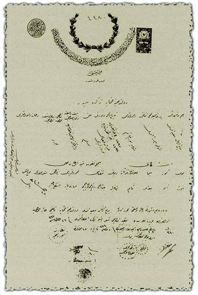

|
Osmanlý Devletinin verdiði hüviyet cüzdaný |
  
|
|
Osmanlý Devletinin verdiði hüviyet cüzdaný |
|
Bediüzzaman Hazretlerine Osmanlý Devletinin verdiði hüviyet cüzdaný

MALÝYE NEZARETÝ, EVRAK-I NAKDÝ VE LEVAZIM MÜDÜRÜYETÝ
ÞURA-YI DEVLETÝN GAYR-I DEVAÝRDEN MESALÝH-Ý ÞAHSÝYEYE
DAÝR VERÝLEN MAZBATAYA MAHSUS VARAKADIR
Kýymeti Beþ Kuruþtur
DEVLET-Ý ALÝYE-Ý OSMANÝYE TEZKERESÝDÝR
Ýsim ve þöhreti: Bediüzzaman Said Efendi.
Pederi ismiyle mahall-i ikameti: Müteveffa Mirza Efendi.
Validesi ismi: Müteveffiye Nuriye Haným.
Tarih ve mahall-i veladeti: 1295(bin iki yüz doksan beþ) ve 1293(bin iki yüz doksan üç). Hizan Kazasý, Nurs Karyesi.
Milleti: Müslim.
San'at ve sýfat ve intihab selahiyeti: Darü'l-Hikmeti'l-Ýslamiye azasýndan.
Müteehhil ve zevcesi olup olmadýðý: Mücerred.
Derecat ve sýnýf-ý asliyesi: -
EÞKALÝ, SÝCÝL-Ý NÜFUSA KAYID OLUNAN MAHALLLÝ
Boy: Orta. - Göz: Ela. - Sima: Buðday.
Alamet-i farika-i sabite: Tam.
Vilayeti: Ýstanbul. - Kazasý: Beyoðlu, Rumeli, Boðaziçi.
Mahalle ve Karyesi: Sarýyer. - Sokaðý: Fýstýklý Baðlar.
Mesken Numarasý: 18/11. - Mesken Nev'i: Yabancý.
Esas kaydý: Bitlis Vilayeti, Hizan Kazasý, Nurs Karyesi.
Balâda isim ve þöhreti, hal ve sýfatý muharrer olan Bediüzzaman Said Efendi,
Devlet-i Aliye-i smaniye tebaiyetini haiz olup ol suretle
ceride-i nüfusta mukayyed olduðunu mü'þir iþbu tezkere ita kýlýndý.
— 26 Eylül 1337 —
Nezaret-i Umur-ý Dahiliye
Kaynak: RisaleiNurEnstitusu.org